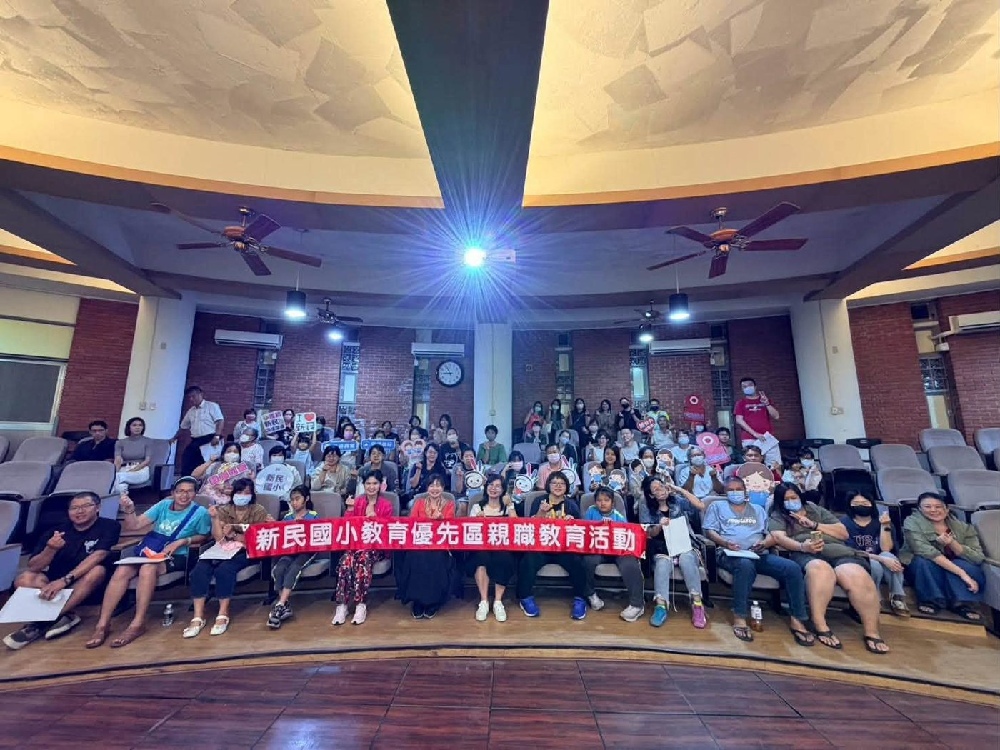
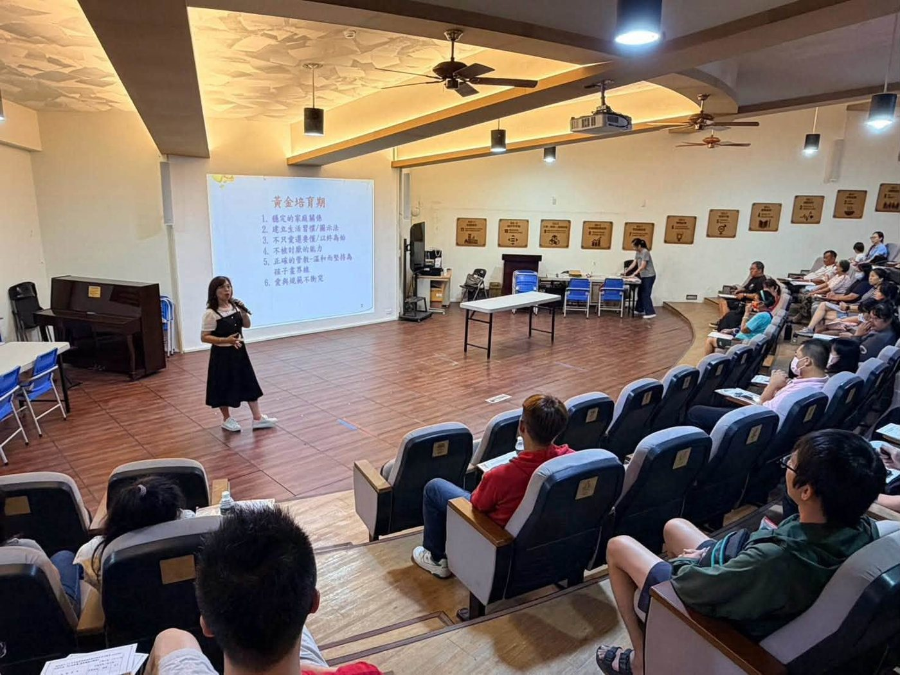
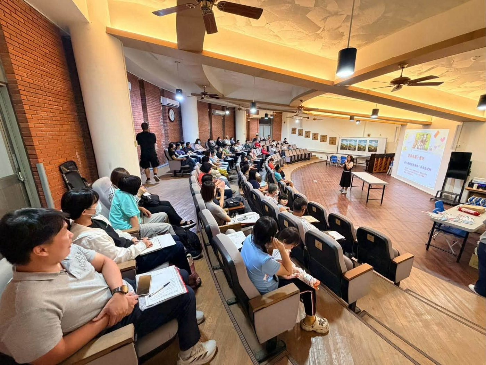

✨ On Friday evening, retired teacher 洪金瓶 came to Hsinmin as the speaker for our parenting talk, “Positive Parenting: Love and Rules Don’t Have to Clash.” With the Tianzhong Marathon 🏃 coming up that weekend, she shared wisdom and practical tips on raising children with the Hsinmin parents who joined in so warmly. 👏 (See the event announcement.)
💗 Cheerful, lively, and rich in teaching experience, Teacher Hung has retired but never stopped teaching. She keeps visiting schools and families to share her years of walking alongside children — especially her experience with children with ADHD and her understanding of their families — helping parents see the real needs behind a child’s behavior, understand their difficulties, and find ways to grow together with their children.
Tonight’s talk wasn’t only about discipline. It reminded every parent: loving our children matters, but understanding them is what lets us truly walk beside them.


洪金瓶老師分享教養智慧，家長們專心聆聽
- 1️⃣Parents are a child’s first teacher and most important role model — “How you get angry is how your child learns to get angry.” Calm your own feelings first, then guide your child. Two tips to practice: make space (step away from the conflict for a moment) and take time (give yourself one minute until you cool down). Be gentle yet firm — reminders and rules aren’t limits; they are love and protection.父母是孩子的第一個老師，也是最重要的榜樣
- 2️⃣Screen rules and good habits from an early age — phones can be lent, not simply handed over. Set screen-time rules, keep regular routines, and build self-discipline and responsibility. Try reading habits, a Pomodoro timer, and specific praise — and look beyond test scores to your child’s character and effort.3C使用有規範，生活習慣從小培養
- 3️⃣Teach children to face failure and solve problems — use positive words, encourage different solutions, practice self-talk, and agree on goals in advance — then celebrate together when they’re reached.教孩子面對失敗，更要教孩子解決問題
- 4️⃣Get angry the right way — and teach children how — feelings are never wrong, but expressing them takes practice. Set clear limits: don’t hurt yourself or others, don’t break things, and don’t use hurtful words.好好生氣，也要教孩子如何生氣
- 5️⃣Believe your child is a good child — when children know their parents always believe in them, they slowly learn to believe in themselves. Trust, hope, and love help children grow.相信孩子是好孩子，讓愛成為孩子的力量
With our children, we need love and principles; we need to accept them, and to be brave enough to set limits.面對孩子，我們要有愛，也要有原則；要懂得接納，也要勇於立界線。
Raising children has never been about demanding instant change — it’s about grown-ups being willing to change first, and practicing step by step alongside them.
💖 May we all become the gentle yet firm adults in our children’s lives — the ones who believe in them and walk with them as they grow. 💕 Hsinmin learns together with every parent, so that love is not only companionship, but also strength for our children to grow. ❤️
【正向教養-愛與規範不衝突】 洪金瓶老師
✨今晚在高鐵站接到金瓶老師，笑容滿溢的她，來到新民國小擔任親職教育講座講師，剛好迎接明後兩天的🏃田中馬盛事，與家長們分享親子教養的智慧與實踐方法，也與週五晚間熱烈參與講座的新民家長們，👏共襄盛舉了一晚田中人的熱情。
💗洪老師開朗活潑、教學經驗豐富，雖然已經退休，卻從未停下教育的腳步，持續走進不同的學校與家庭，分享多年來陪伴孩子成長的經驗。尤其希望透過自身對過動兒經驗的分享及其家庭處境的理解，讓更多家長看見孩子行為背後真正的需求，理解孩子的困難，也陪伴父母一起尋找方法，與孩子共同成長。
今晚的分享，不只是教我們如何管教孩子，更提醒每一位父母：愛孩子很重要，但懂孩子，才能真正陪伴孩子。
1️⃣、父母是孩子的第一個老師，也是最重要的榜樣
「教養孩子，你怎麼生氣，孩子就學你怎麼生氣。」
孩子不只聽我們說什麼，更會觀察我們怎麼做。當孩子出現情緒或行為問題時，父母需 #先安頓自己的情緒，再引導孩子，一起處理問題。洪老師提醒著:情緒線與理智線往往相互影響，當情緒失控時，很難做出好的教養決定。
#可以練習的兩個好方法：
1. 拉開空間：暫時離開衝突現場，讓彼此有喘息的空間。
2. 拉開時間：給自己一分鐘，等情緒緩和後再回來處理問題。
面對孩子，我們要練習溫和而堅定，不以吼叫代替溝通，也不因為愛而失去原則。因為 #叮嚀與規範不是限制，而是愛與保護。
2️⃣、3C使用有規範，生活習慣從小培養
孩子的黃金培育期，需要大人有意識地陪伴與引導。手機只能借，不能隨意給；#建立3C使用守則，避免孩子過度依賴手機。#培養自律與責任感，固定的生活作息，讓孩子逐漸建立管理自己的能力。#規範不是為了控制孩子，而是 #幫助孩子學會為自己的行為負責。
方法1.培養閱讀習慣2.善用番茄鐘3.具體讚美
🔖比起只關注考試成績，#更要看見孩子身上的品格與努力。
📌#品格要先培養好，#才能承接未來更多的禮物。
#孩子會在父母的眼神、語言與態度中，看見自己是什麼樣的人。
3️⃣、教孩子面對失敗，更要教孩子解決問題
孩子遇到挫折時，父母不必急著責備，也不必立刻替孩子解決所有問題。
📌我們可以：
● 使用正向語言陪孩子面對失敗。
● 鼓勵孩子思考不同的解決方法。
● 練習自我指導語，讓孩子學會提醒自己。
● 事先約定目標，完成後一起慶祝。
讓孩子從一次次練習中，建立面對困難的勇氣與能力。
4️⃣、#好好生氣，#也要教孩子如何生氣
情緒沒有對錯，但表達情緒需要學習。
孩子可以生氣、可以難過、可以哭泣，但必須建立清楚的界線：
● 不能傷害自己與別人。● 不能任意破壞物品● 不能用傷人的言語攻擊他人。
真正的教養，不是禁止孩子有情緒，而是 #教孩子用適當的方式表達情緒。
5️⃣、相信孩子是好孩子，讓愛成為孩子的力量
孩子需要有人相信他，也需要有人對他抱持期待。
透過正向語言，幫助孩子建立自我認同，當孩子知道父母始終相信他，他也會慢慢學會相信自己。
#信任、#盼望與愛，#是陪伴孩子成長的重要力量。
今晚，洪金瓶老師帶給我們的不只是教養技巧，更是一份重新理解孩子的提醒。
面對孩子，我們要有愛，也要有原則；要懂得接納，也要勇於立界線。
教育孩子，從來不是要求孩子立刻變好，而是大人願意先改變，陪著孩子一步一步練習。
💖願我們都能成為孩子生命中，那個溫柔而堅定、願意相信他、也陪伴他成長的大人。
💕新民國小與每一位家長一起學習，讓愛不只是陪伴，更成為孩子成長的力量。❤️
@老師金句連發，直抵內心的經驗分享，小編精簡節錄，歡迎有參與的家長一起分享心得。
Tap 🔊 to listen · 點喇叭聽發音
Take a deep breath when you feel angry.覺得生氣的時候，先深呼吸。
Mom talks to me in a gentle voice.媽媽用溫和的聲音跟我說話。
Be kind but firm about the rules.對規則要溫和但堅定。
Don’t look at a screen for too long.不要盯著螢幕太久。
Specific praise helps children try harder.具體的讚美讓孩子更願意努力。
Failure helps us learn and grow.失敗幫助我們學習和成長。
Match the word to its meaning
把英文和中文配對
Matched 配對成功：0 / 6